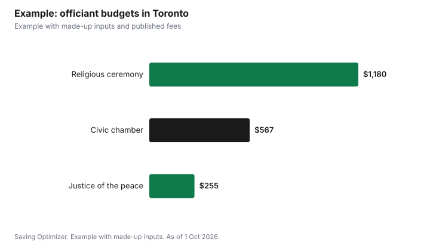

Weddings · Canada
Wedding Officiant Fees in Canada: Religious, Civil and Having a Friend Officiate
In Canada, who can legally marry you is set by each province, so check that your officiant is authorized before comparing prices. In Ontario, marriages must be performed by a registered officiant recognized by a religious body or an Indigenous community, or by a civil officiant: a municipal clerk or delegate, a judge, an associate judge or a justice of the peace. There is no set fee for religious officiants; a marriage by an Ontario judge or justice of the peace carries a required $75 fee, and municipalities may set their own fees for civil ceremonies. A friend cannot simply officiate in Ontario unless they are authorized; a common approach is for a friend to lead the ceremony while an authorized officiant handles the legal part.
Key takeaways
- Ontario requires an authorized officiant under the Marriage Act.
- Religious officiants: no set fee under the Act; their body may set one.
- Ontario judge or justice of the peace: required $75 fee.
- Municipal civil ceremonies: fees vary by municipality.
- A friend can lead a ceremony, but an authorized officiant must perform the legal marriage.
- Example with made-up inputs: three officiant budgets.
Who can solemnize marriages in Ontario
| Category | Who | Fee rule |
|---|---|---|
| Registered (religious) | Persons recognized by their religious body and registered | No set fee under the Act; body may set fees |
| Registered (Indigenous) | Persons recognized by a First Nation, Métis or Inuit organization or community and registered | Set by the officiant or community |
| Civil: judge or justice of the peace | Judges, associate judges, Ontario justices of the peace | Required $75 fee for an Ontario judge or justice of the peace |
| Civil: municipal | Municipal clerks or delegates | Municipal fees may apply |
| Civil: MPP | Members of Provincial Parliament who have given written notice | Not specified |
Anyone outside these categories is not authorized to perform a marriage in Ontario. Ask any officiant you are considering to confirm in writing which category they fall under and, for a registered officiant, which religious body or community recognizes them. If they cannot answer clearly, look elsewhere, because a marriage performed by an unauthorized person can cause serious problems later.
Civil ceremony fees
Civil ceremony costs vary by province and municipality. Some published examples as of 1 October 2026:
| Place | Fee |
|---|---|
| Ontario judge or justice of the peace | $75 required fee |
| Toronto civic centre wedding chamber (room only) | $136.85 per 30 minutes, including HST |
| Quebec civil marriage at a courthouse or city hall | $324 plus taxes |
| Quebec civil marriage elsewhere | $431 plus taxes |
| Manitoba marriage commissioner | $50 plus expenses |
In Toronto, the wedding chamber fee covers the room only; the officiant is separate. The City of Toronto also permits small, stand-up wedding ceremonies in certain parks and conservatories at $260.07 an hour including taxes, with no chairs, decorations, confetti, food or drink; the officiant is again your responsibility.
Religious officiant fees
Ontario's officiant guide says there is no set fee under the Marriage Act for marriages performed by registered religious officiants, and governing bodies may have their own fees. Places of worship may also charge for the space, music, marriage preparation courses or a donation. Ask for all costs in writing, and whether non-members pay more.
Having a friend officiate
In Ontario, a friend who is not an authorized officiant cannot legally marry you. Options: the friend leads a personal ceremony while an authorized officiant performs the legal vows and signs the licence; you hold a short legal ceremony beforehand with an officiant and witnesses, then a symbolic ceremony led by the friend; or the friend becomes authorized through a religious body that will recognize and register them. Rules differ in other provinces; check with your provincial vital statistics office.
What an officiant does
Beyond the ceremony itself, an officiant usually meets the couple beforehand, helps write or choose the ceremony wording, may attend the rehearsal, checks the licence and witnesses, conducts the legal declarations and vows, signs the licence and sends the registration to the province. Ask which of these are included in the fee. Travel to a venue outside the officiant's area, a rehearsal on a separate evening and custom ceremony writing are common extras, so get them priced in advance.
Questions to ask
- Are you authorized to perform marriages in this province, and how can I verify it?
- What does your fee include, and what are travel, rehearsal and writing fees?
- Can we include readings, music or cultural rituals of our choice?
- Will you allow a friend to lead part of the ceremony?
- Who registers the marriage, and how soon after the ceremony?
- What happens if you are ill on the day?
Paperwork
- Get a marriage licence from a municipality (or have banns published, where allowed) before the ceremony.
- In Ontario, apply within the licence's validity; Toronto says to apply within 90 days of the wedding.
- Bring two witnesses.
- The couple, witnesses and officiant sign the licence or banns immediately after the ceremony.
- After the ceremony the paperwork is sent for registration; you then apply for a marriage certificate, which is not issued automatically.
Checklist
- Confirm the officiant is authorized in the province where you marry.
- Get their fee, travel costs and any rehearsal fee in writing.
- Ask what ceremony content they allow, especially for civil ceremonies.
- Book the licence and witnesses.
- Plan a role for a friend if you want a personal touch.
- Order the marriage certificate after registration.
Example with made-up inputs
These numbers are an example with made-up inputs, apart from the published fees noted. Option A, a justice of the peace ceremony in Ontario: $75 required fee, a $180 Toronto marriage licence, total $255. Option B, a Toronto civic centre chamber for 30 minutes at $136.85 with a made-up $250 for a municipal or private officiant and the $180 licence: $566.85. Option C, a religious ceremony with a made-up $400 officiant honorarium, a $600 facility fee and the $180 licence: $1,180. A friend leading a symbolic ceremony adds nothing legally but may add a thank-you gift.
| Option | Total |
|---|---|
| Justice of the peace plus licence | $255.00 |
| Civic centre chamber, officiant and licence | $566.85 |
| Religious ceremony, facility and licence | $1,180.00 |

Common mistakes
- Assuming a friend can legally officiate.
- Booking an officiant not authorized in the province.
- Forgetting the licence or witnesses.
- Not ordering the marriage certificate afterward.
- Missing travel or rehearsal fees in the quote.
Related: marriage licence fees by province and city hall weddings.
Sources
- Government of Ontario, Getting married, ontario.ca, as of 1 Oct 2026.
- Government of Ontario, Marriage Officiant's Guide to Performing Marriage Ceremonies in Ontario, as of 1 Oct 2026.
- Ontario Regulation 738 (General) under the Marriage Act, s. 3, ontario.ca, as of 1 Oct 2026.
- City of Toronto, Wedding Ceremonies and Commercial Photography in Parks; Booking a Wedding Chamber; Applying for a Marriage Licence, toronto.ca, as of 1 Oct 2026.
- Gouvernement du Québec, Tariff of court costs: civil marriage and civil union (2026), quebec.ca, as of 1 Oct 2026.
- Manitoba Vital Statistics, Getting Married in Manitoba, as of 1 Oct 2026.
- Officiant honorariums and facility fees in the example are made-up inputs.
Frequently asked questions
Can a friend officiate my wedding in Ontario?
Not legally unless they are an authorized officiant. A friend can lead a symbolic ceremony while an authorized officiant performs the legal marriage.
How much does a justice of the peace charge to marry you in Ontario?
There is a required $75 fee for marriages by an Ontario judge or justice of the peace.
Do religious officiants have a set fee?
Not under Ontario's Marriage Act. Their governing body may set fees.
Who can perform civil marriages in Ontario?
Municipal clerks or delegates, judges, associate judges, justices of the peace and MPPs who have given written notice.
How much is a civil wedding in Quebec?
In 2026, up to $324 plus taxes at a courthouse or city hall, or $431 plus taxes elsewhere.
Who signs the marriage licence?
The couple, the witnesses and the officiant, immediately after the ceremony.
Researched and drafted with AI assistance and fact-checked against official Canadian sources. How we create content.
Disclosure: Saving Optimizer may earn a commission if a partner link is added later. No partnership is claimed on this page. Education only.